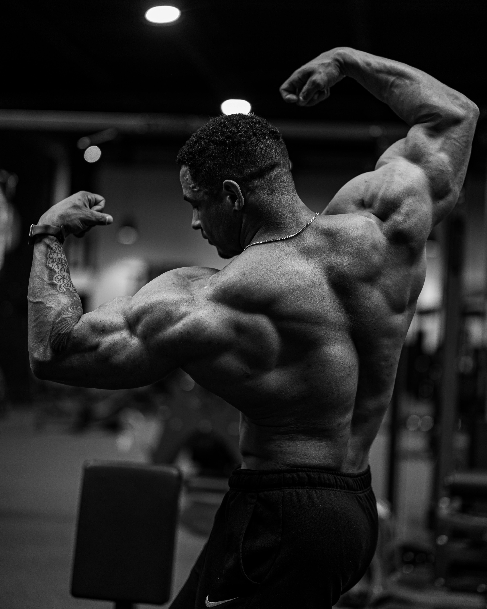

Body Building
Body Building
Bodybuilding is an art form that goes beyond physical strength; it embodies discipline, dedication, and determination. It's a journey of self-discovery and self-improvement, where every rep and every set contributes to sculpting a masterpiece: your body. Through structured training, nutrition, and mindset, bodybuilders strive to achieve optimal muscle development, symmetry, and definition. It's a lifestyle that demands consistency, sacrifice, and resilience, pushing boundaries both in and out of the gym. Beyond aesthetics, bodybuilding fosters mental fortitude, confidence, and a deep sense of accomplishment. Embrace the challenge, embrace the grind, and witness the transformation of mind, body, and spirit.

Gym For Men
The gym is a sanctuary where men forge their bodies and minds into pillars of strength. It's a realm of iron and sweat, where goals are set, challenges embraced, and limits shattered. Within its walls, men sculpt muscles, boost endurance, and cultivate resilience. It's a place where discipline meets determination, and excuses are left at the door. Whether lifting weights, pushing through cardio, or honing functional fitness, the gym is a proving ground for greatness. Beyond physical gains, it fosters camaraderie, confidence, and a relentless pursuit of self-improvement. Step into the gym, embrace the grind, and unleash your full potential.
 Gym For Women
Gym For Women
The gym is a haven where women empower their bodies and minds, transcending boundaries and embracing strength in all its forms. It's a space of determination and resilience, where each workout is a step towards self-love and empowerment. From lifting weights to practicing yoga, women sculpt muscles, improve endurance, and enhance flexibility, unlocking their full potential. Beyond physical gains, the gym fosters a sense of community, support, and confidence. It's where goals are set, challenges are conquered, and dreams are realized. Embrace the gym as a sanctuary of empowerment, where every sweat session becomes a celebration of inner and outer strength.